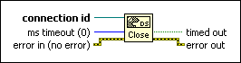
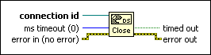

DataSocket Close Function
Owning Palette: DataSocket VI and Functions
Requires: Base Development System
Closes a data connection you specify in connection id.

 Add to the block diagram Add to the block diagram |
 Find on the palette Find on the palette |
Owning Palette: DataSocket VI and Functions
Requires: Base Development System
Closes a data connection you specify in connection id.

| Add to the block diagram |
Find on the palette |
 |
connection id is a connection refnum that uniquely identifies the connection. |
 |
ms timeout (0) specifies the number of milliseconds the function waits for the pending operation to complete. The default is 0, which means the function does not wait for the operation to complete. Use a timeout value of –1 to make the function wait until the operation completes. |
 |
error in describes error conditions that occur before this node runs. With the following exception, this input provides standard error in functionality.
This node runs normally even if an error occurred before this node runs. |
 |
timed out returns FALSE if the operation completed within the timeout interval with no errors. If ms timeout is 0, timed out is FALSE. |
 |
error out contains error information. This output provides standard error out functionality. |